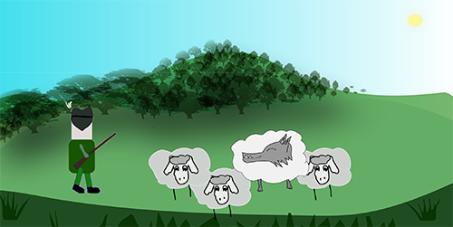

Module 1 & 3
JavaScript-part 1 & JavaScript-part 2
Storytelling and Character Design.
Task: Make a short story, animation in a specific style.
"Click to View PDF - Style tile & Story idea - Story board & Work sheet"
Inspired by the "Liza Vertudaches" style
First things first...the Style tile..
The style has a specific texture an organic feel, soft, hand-drawn feeling. The animations are cute and silly - the characters are usually animals. The conture line is Black and a very thin line.
Typography:
Has a hand-drawn feeling to it..Amatic SC, Indie Flower.- white, It gives the story a cute and innocent vibe,it is synchronized, similar and in perfect harmony with the animation
Colors
Genre / mood
Humorous, tragic
Message:
Don’t make unnecessary enemies, you don’t know when you might need them.
Description of my story:
The main character is a wolf trying to hide from the hunter.
The wolf sees a flock of sheep and hides between them hoping the hunter will leave. The sheep know the old and wicked wolf and they do not want to let it escape so easily, but they do not know what to do …..
The usar can help them out, it has 3 options:
- The sheeps pretend that everything is in order and forgive the wolf from the past sins that he had made.
- The sheeps start talking to the hunter hoping to get the wolf out.
- The sheeps run from one side to the other leaving the wolf behind.

Click if you want to play!:
Click on the walking wolf:
INTERACTIVE TEASER ASSIGNMENT - THEME 2
Task: We wanted to make an interactive teaser that will be more appealing to young people 15-18 years(Danemark), so they will want to watch the movie “ The Hunchback of Notre Dame” black/white version 1939
Action / Plot
Click to View The Whole Story Board
The idea of the tesar was to begin with the image that reveals the place and timing of the action and is in the center of the movie, Notre Dame church.
Interaction
Untill the user cliks the church or press enter
Action / Plot
Than display Quasimodo world in a frame, The Hunchback , all the time alone and all about his life was to ring the bells of the church.
Interaction
None
Action / Plot
At the opposite side is Esmeralda, a gypsy girl how earns money by dancing she was always surrounded by people. Esmeralda is dancing in the festival while Phoebus, a captain is falling in love with her;
Interaction
The user has to click on Esmeralda to make her dance.
Action / Plot
Quasimodo and Esmeralda meat in a bead circumstance, Frollo is obsessed with her beauty and fools Quasimodo to kidnap her, he failed and had been punished for his deed;
Interaction
The user has to whipe Quasimodo 3 times, if he will press more Quasimodo will die.
Action / Plot
Esmeralda forgives him and tries to help him by giving him water;
Interaction
The Hunchback shouts "Water" untill user clicks on esmeralda to give him water.
Action / Plot
Than the story continues with Esmeralda being accused of killing Phoebus, because she is a gypsy and Frollo setted all up;
Interaction
none
Action / Plot
The teaser ends with Quasimodo crying because of the injustice that they made to Esmeralda;
Interaction
none
Expert Review
I was responsible to conduct the expert test, we were in the begining with the animation so I didn't have much animation to show, but we had nice feedback and helped improve our teasar. Fore more information read the pdf..
Clik to View the Pdf!
Interview
I was as a guest to a high-school with one of my classmates and we interviewed some teenagers, we showed the rugh version of our tesar, we got a lot of good information and got to know how a denish teenage thinks, helping us to deliver the best product to them.
My group showing the tesar at a school, we had a lot of fun